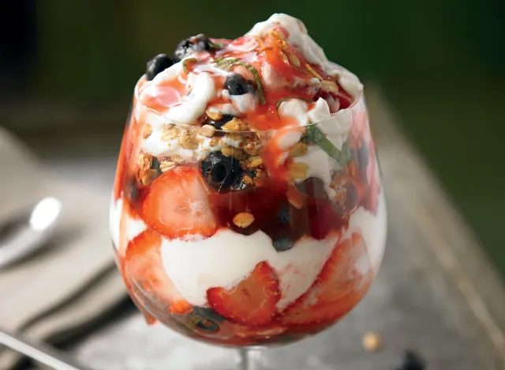

Read the label of any fruit-on-the-bottom brand, and you'll see what we mean: Odds are, high-fructose corn syrup is considerably higher on the ingredients list than actual fruit. That's why it's always better to buy plain, protein - and probiotic-rich Greek yogurt and add the real fruit yourself.
Try adding even the barest amount of sugar, that way you can draw out the natural fructose in the fruit and create a tasty syrup that works beautifully on top of yogurt, pancakes, or even a bowl of ice cream.